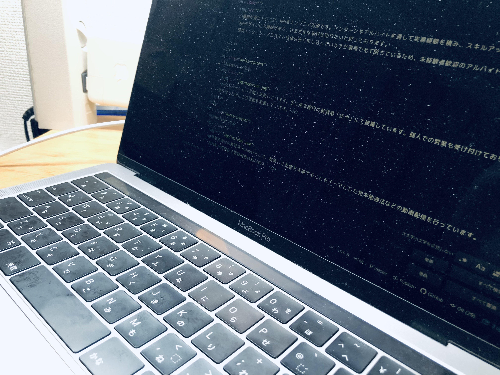
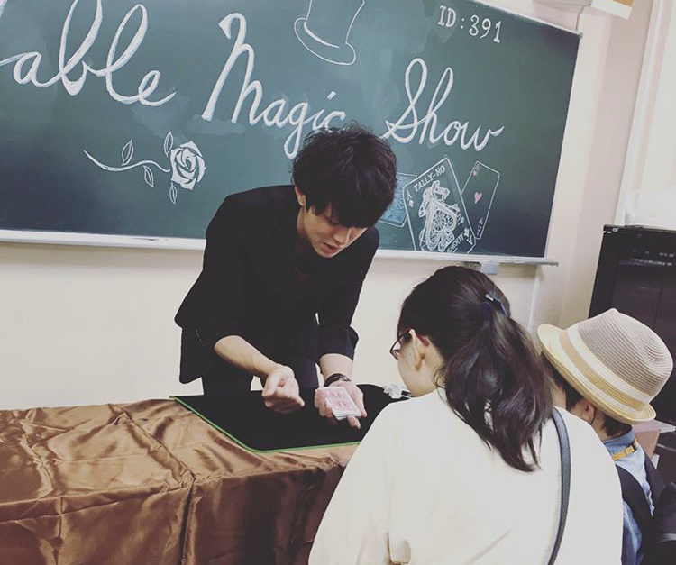

Works
Engineer

機械学習エンジニア、Web系エンジニア志望です。インターンやアルバイトを通して実務経験を積み、スキルアップしていきたいと考えております。 Webデザインにも興味があり、さまざまな業界を知りたいと思っております。 現状インターン、アルバイト自体は多く申し込んでいますが選考で全て落ちているため、未経験者歓迎のアルバイト、インターン先を募集しています。
Magician

マジシャンとして個人活動しています。主に東京都内の居酒屋「庄や」にて披露しています。個人での営業も受け付けております。 現在はコロナにより活動を自粛しています。
YouTuber
受験生向けの教育系YouTuberとして、塾無しで受験を突破することをテーマとした独学勉強法などの動画配信を行っています。 2020年10月現在で登録者数は約2300人。